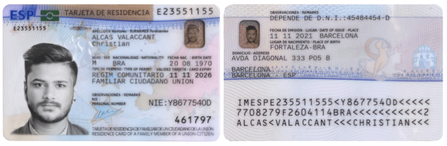

Los miembros de la familia de un ciudadano de un Estado miembro de la U.E., de un Estado parte en el Acuerdo
sobre el EEE o de Suiza, que no ostenten la nacionalidad de uno de dichos Estados, cuando le acompañen o se
reúnan con él, podrán residir en España por un período superior a tres meses, estando sujetos a la
obligación de
solicitar y obtener una "tarjeta de residencia de familiar de ciudadano de la Unión.
Requisitos:
-
Acompañar o reunirse con un ciudadano de la Unión u otro Estado parte del Espacio Económico Europeo, con
derecho a residencia por un período superior a tres meses, por ser trabajador por cuenta ajena o propia,
tener seguro de enfermedad y medios económicos suficientes para la unidad familiar, o ser estudiante con
seguro de enfermedad y recursos suficientes para la unidad familiar.
-
El ciudadano de la Unión u otro Estado parte del Espacio Económico Europeo, debe cumplir una de las
siguientes condiciones:
-
Ser trabajador por cuenta ajena en España, o
-
Ser trabajador por cuenta propia en España, o
-
Disponer para sí y los miembros de su familia, de recursos económicos suficientes para no
convertirse en una carga para la asistencia social de España durante su periodo de residencia.
También deberá aportar un seguro de enfermedad público o privado, contratado en España o en otro
país, que proporcione cobertura en España durante su período de residencia equivalente a la
proporcionada por el Sistema Nacional de Salud. La valoración de la suficiencia de medios
económicos
se efectuará de manera individualizada y, en todo caso, teniendo en cuenta la situación personal
y
familiar del solicitante. Se considerará acreditación suficiente para el cumplimiento de este
requisito la tenencia de recursos que sean superiores al importe que cada año fije la Ley de
Presupuestos Generales del Estado para generar el derecho a recibir una prestación no
contributiva,
o
-
Ser estudiante y estar matriculado en un centro público o privado reconocido o financiado por la
administración educativa para cursar estudios o formación profesional, así como contar con un
seguro
de enfermedad público o privado contratado en España u otro país que proporcione cobertura
completa
en España, y declaración responsable de que posee recursos económicos suficientes para sí y los
miembros de su familia para no convertirse en una carga para la asistencia social de España
durante
su periodo de residencia.
TENER EL SIGUIENTE PARENTESCO CON EL CIUDADANO DE LA UNIÓN:
-
Si es familiar de estudiante podrá ser:
-
Cónyuge, siempre que no haya recaído el acuerdo o la declaración de nulidad del vínculo
matrimonial
o divorcio.
-
Pareja con la que mantenga una unión análoga a la conyugal e inscrita en un registro público
establecido en un Estado miembro de la Unión, o en un Estado parte en el Espacio Económico
Europeo y
siempre que no se haya cancelado dicha inscripción, lo que deberá ser suficientemente
acreditado.
Las situaciones de matrimonio e inscripción como pareja registrada se considerarán, en todo
caso,
incompatibles entre sí.
-
Hijo del ciudadano de la Unión o de su cónyuge o pareja registada siempre que no haya recaído el
acuerdo o la declaración de nulidad del vínculo matrimonial o divorcio, o se haya cancelado la
inscripción registral de la pareja, menor de veintiún años o mayor de dicha edad que viva a su
cargo, o sea incapaz.
-
Cualquier miembro de la familia que en el país de procedencia estén a cargo o vivan con el
ciudadano
de la Unión. Se entenderá acreditada la convivencia si se demuestra fehacientemente una
convivencia
continuada de 24 meses en el país de procedencia
-
Cualquier miembro de la familia, que por motivos graves de salud o discapacidad sea
estrictamente
necesario que el ciudadano de la Unión se haga cargo de su cuidado personal
-
Pareja de hecho no inscrita con la que mantenga una relación estable debidamente probada al
acreditar la existencia de un vínculo duradero. En todo caso, se entenderá la existencia de ese
vínculo si se acredita un tiempo de convivencia marital de, al menos, un año continuado, salvo
que
tuvieran descendencia en común, en cuyo caso bastará la acreditación de convivencia estable
debidamente probada. Las situaciones de matrimonio y pareja se considerarán, en todo caso,
incompatibles entre si.
-
En los demás supuestos podrá ser:
-
Cónyuge, siempre que no haya recaído el acuerdo o la declaración de nulidad del vínculo
matrimonial
o divorcio.
-
Pareja con la que mantenga una unión análoga a la conyugal e inscrita en un registro público
establecido en un Estado miembro de la Unión, o en un Estado parte en el Espacio Económico
Europeo y
siempre que no se haya cancelado dicha inscripción. Las situaciones de matrimonio e inscripción
como
pareja registrada se considerarán, en todo caso, incompatibles entre sí.
-
Hijo directo del ciudadano de la Unión o del Espacio Económico Europeo o de su cónyuge o pareja
registrada siempre que no haya recaído el acuerdo o la declaración de nulidad del vínculo
matrimonial, o divorcio, o se haya cancelado la inscripción registral como pareja, menor de
veintiún
años, o mayor de dicha edad que viva a su cargo, o incapaz.
-
Ascendiente directo del ciudadano de la Unión o del Espacio Económico Europeo o de su cónyuge o
pareja registrada que viva a su cargo, siempre que no haya recaído el acuerdo o la declaración
de
nulidad del vínculo matrimonial, o divorcio, o se haya cancelado la inscripción registral de la
pareja.
-
Cualquier miembro de la familia que en el país de procedencia estén a cargo del ciudadano de la
Unión.
-
Cualquier miembro de la familia que en el país de procedencia conviva con el ciudadano de la
Unión.
Se entenderá acreditada la convivencia si se demuestra fehacientemente una convivencia
continuada de
24 meses en el país de procedencia
Documentación:
-
Impreso de solicitud en modelo oficial (EX–19) por duplicado, debidamente cumplimentado y firmado por el
familiar del ciudadano de la Unión.
-
Pasaporte completo válido y en vigor del familiar. En el supuesto de que esté caducado, deberá aportarse
copia de éste y de la solicitud de renovación.
-
Documentación acreditativa de la existencia de vínculo familiar con el ciudadano de la Unión o del
Espacio
Económico Europeo
-
En caso de pareja no registrada, documentación acreditativa de que constituyen una pareja estable que
atestigua la existencia de un vínculo duradero, así como justificación del tiempo de convivencia marital
o,
en su caso, certificado de nacimiento de la descendencia en común.
-
Si es hijo del ciudadano de la Unión o del Espacio Económico Europeo o de su cónyuge o pareja de hecho
registrada mayor de 21 años, documentación acreditativa de su condición de familiar a cargo o
dependiente
-
Si es hijo menor de edad y no reside en España con los dos progenitores, documentación acreditativa de
su
condición de familiar a cargo o dependiente del ciudadano de la Unión o de su cónyuge o pareja
registrada
-
Si es ascendiente del ciudadano de la Unión o de su cónyuge o pareja registrada, documentación
acreditativa
de su condición de familiar a cargo
-
D.N.I. del ciudadano español o certificado de registro del ciudadano de la Unión al que acompañan o con
el
que van a reunirse
-
Si se trata de otro miembro de la familia, documentación acreditativa del parentesco y de la
dependencia, o
de que en el país de procedencia convivían con el ciudadano de la Unión, o de los motivos graves de
salud o
discapacidad.
-
Dependiendo de la condición que cumpla el ciudadano de la Unión o del Espacio Económico Europeo:
-
Si es trabajador por cuenta ajena: podrá aportar cualquiera de los siguientes documentos:
-
Declaración de contratación del empleador o certificado de empleo, incluyendo, al menos,
los
datos del nombre y dirección de la empresa, identificación fiscal y código cuenta de
cotización.
-
Contrato de trabajo registrado en el Servicio Público de Empleo, o la comunicación de la
contratación y sus condiciones a través de la plataforma CONTRAT@.
-
Documento de alta o situación asimilada al alta en el régimen correspondiente de
Seguridad
Social o consentimiento de la comprobación de los datos en los ficheros de la Tesorería
General de la Seguridad Social.
-
Trabajador por cuenta propia podrá aportar cualquiera de los siguientes documentos:
-
Inscripción en el Censo de Actividades económicas.
-
Justificación de su establecimiento mediante Inscripción en el Registro Mercantil.
-
Documento de alta o situación asimilada al alta en el régimen correspondiente de
Seguridad
Social, o consentimiento de la comprobación de los datos en los ficheros de la Tesorería
General de la Seguridad Social o de la Agencia Tributaria.
-
Si no se ejerce actividad laboral en España se deberá aportar:
-
Documentación que acredite disponer de seguro de enfermedad público o privado,
contratado en
España o en otro país, siempre que proporcione una cobertura en España durante su
periodo de
residencia equivalente a la proporcionada por el Sistema Nacional de Salud. Los
pensionistas
cumplen con esta condición aportando certificación de disponer asistencia sanitaria con
cargo al Estado por el que perciben pensión.
-
Documentación que acredite disponer de recursos suficientes para el ciudadano de la
Unión y
sus familiares para el periodo de residencia en España. Se podrá acreditar por cualquier
medio de prueba admitido en derecho, tales como títulos de propiedad, cheques
certificados,
documentación justificativa de obtención de rentas de capital o tarjetas de crédito con
certificación bancaria que acredite la cantidad disponible como crédito de la citada
tarjeta.
Nota importante: cuando se aporten documentos de otros países deberán estar traducidos al
castellano o lengua
cooficial del territorio donde se presente la solicitud.
Cuando se trate de formularios estándares de la Unión Europea no será necesaria ni su traducción, ni su
legalización de conformidad con lo dispuesto en la normativa comunitaria que los ampara. Por ejemplo:
modelos de
asistencia sanitaria S1, E109, E121.
Por otro lado, todo documento público extranjero deberá ser previamente legalizado por la Oficina consular
de
España con jurisdicción en el país en el que se ha expedido dicho documento o, en su caso, por el Ministerio
de
Asuntos Exteriores y de Cooperación salvo en el caso en que dicho documento haya sido apostillado por la
Autoridad competente del país emisor según el Convenio de la Haya de 5 de octubre de 1961 y salvo que dicho
documento esté exento de legalización en virtud de Convenio Internacional.
CONTRATA NUESTROS SERVICIOS Y EN POCO TIEMPO OBTENDRAS LA ANSIADA
